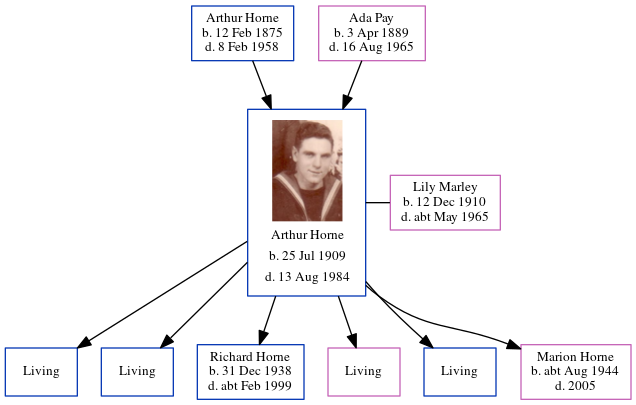

Lorna Horne cMay 1927 - 1927
[ Home ] | [ Calendar ] | [ Surnames Index ] | [ Errors ] | [ Family History ]The child of Arthur Horne (a smack owners's assistant) and Ada Pay, Lorna Horne, the second cousin twice-removed on the father's side of Nigel Horne, was born in Thanet, Kent, England c. May 19271.
She died in Thanet in 1927.
Parents
- Arthur Albert was born on 12 Feb 1875
- Ada Caroline Eleanor was born on 3 Apr 1889
Citations
- England & Wales births 1837-2006 - Findmypast
Media
England & Wales deaths 1837-2007 - BMD/D/1927/2/AZ/000406/147
England & Wales births 1837-2006 - BMD/B/1927/2/AZ/000601/105
Family Tree
Map
Generated by ged2site. Last updated on Jul 3, 2024
Known Issues
Death date (1927) has no citations